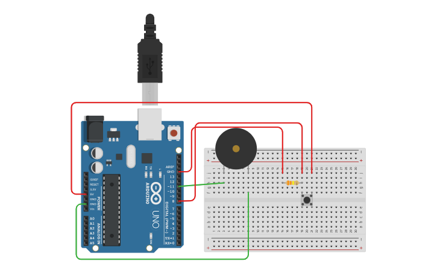

PROJECT 16: ELECTRONIC DOORBELL
Interactive Sound Control
Mission Brief
We've made a buzzer beep, and we've read a button press. Now, let's combine them! In this project, you will build a functional doorbell circuit that triggers a loud tone whenever the button is held down.
Key Components
- Arduino Uno R3
- Piezo Buzzer
- Push Button
- Resistor (10kΩ for Pull-down)
- Jumper Wires
Circuit Diagram

Pin Connections
| Arduino Pin | Component Connection |
|---|---|
| Pin 11 | Buzzer Positive (+) Leg |
| Pin 12 | Button Signal Leg |
| 5V | Button Power Leg |
| GND | Buzzer (-) & Button Resistor |
Step-by-Step Instructions
- Connect the Arduino 5V and GND to the breadboard rails.
- Insert the Buzzer. Connect the Positive leg (+) to Pin 11 and Negative to GND.
- Insert the Push Button. Connect one leg to the 5V rail.
- Connect the diagonal leg of the button to Pin 12.
- Add a 10kΩ Resistor from that same diagonal leg (Pin 12 side) to GND. This is crucial to prevent false triggering!
- Upload the code below.
Arduino Code
/* Project 16 - Electronic Doorbell
* Reads a button on Pin 12.
* Plays a tone on Buzzer Pin 11 when pressed.
*/
const int buttonPin = 12;
const int buzzerPin = 11;
void setup() {
pinMode(buttonPin, INPUT); // Button sends signal IN
pinMode(buzzerPin, OUTPUT); // Buzzer sends sound OUT
}
void loop() {
// Read the state of the button
int buttonState = digitalRead(buttonPin);
// If button is pressed (HIGH)
if (buttonState == HIGH) {
tone(buzzerPin, 1000); // Play 1000Hz tone
} else {
noTone(buzzerPin); // Stop sound immediately
}
}
How It Works
- Direct Control:
-
Real-time Feedback:
The code runs thousands of times per second. It constantly checks `digitalRead(12)`. The moment it sees 5V (HIGH), it activates `tone()`. The moment you let go, it executes `noTone()`. -
Pull-down Resistor:
Without the 10k resistor connected to ground, the button pin would "float" and the buzzer would make random crackling noises even when not pressed. The resistor keeps it quiet (LOW) until you press the button.
Expected Output
The buzzer remains silent by default. When you press the button, a clear, continuous beep sounds. It stops instantly when you release the button.
What You Learned
- Combining Input (Button) and Output (Sound) devices.
- The importance of pull-down resistors in audio circuits.
- Creating interactive hardware that responds to human touch.
Next Steps / Extension Ideas
Change the code to play a melody (like "Ding-Dong") when pressed once, instead of just buzzing while held. Hint: Use `delay()` inside the `if` statement!